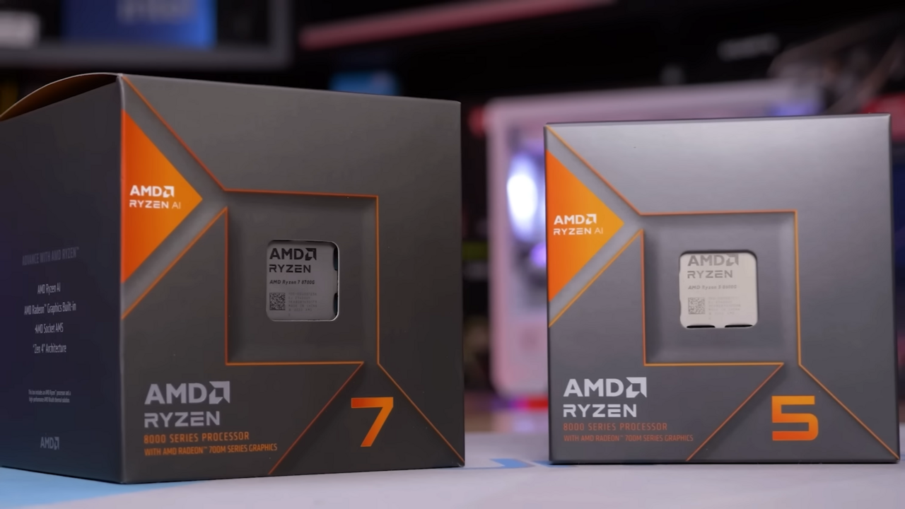
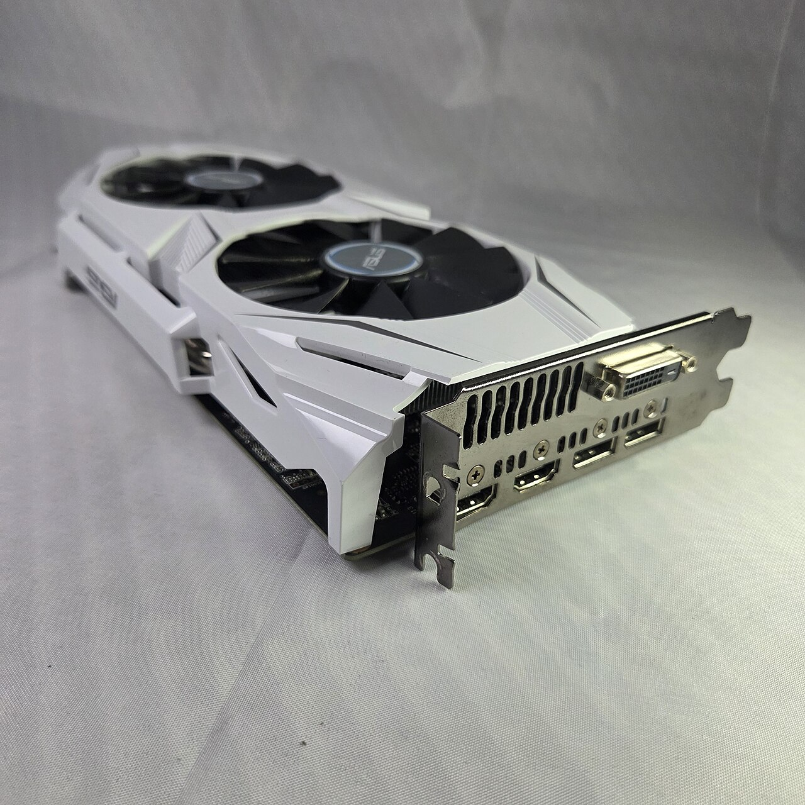

Under S$1,000, the goal is the best frame rate at the resolution you actually play at. A balanced machine with a new board, new storage and a tested graphics card will beat a machine stuffed with one flagship part and four cheap compromises.

What a fully new S$1,000 build costs
Here is the bare minimum for new parts: a Ryzen 5 3600 and an RTX 5050 for 1080p gaming. These are indicative Singapore walk-in prices from late November 2026.
| Part | Indicative new price | Why it matters |
|---|---|---|
| Ryzen 5 3600 | S$149 | Boxed CPU with a Wraith Stealth cooler |
| RTX 5050 8GB | S$500 | Entry-level discrete card for 1080p play |
| B450 or B550 board | S$110 | AM4 board with two memory slots filled |
| 16GB DDR4-3200 | S$100 | 2 × 8GB in dual channel |
| 500GB NVMe SSD | S$85 | Enough for a few modern games |
| 550W–650W PSU | S$95 | Headroom for the graphics card |
| Airflow case | S$95 | Budget chassis with front intake |
| Parts total | S$1,134 | Before assembly, testing, delivery and setup |
At S$1,134, the all-new RTX 5050 build is over S$1,000 before any labour cost. Budget about S$165 for a 27-inch 1440p monitor, S$40 for a keyboard and S$155 for Windows 11 activation.
How integrated graphics keeps the budget under S$1,000
Integrated graphics lives inside the processor. It uses system memory as video memory, so the build saves the price of a separate graphics card. Current AMD Ryzen 8000G processors and Intel Core Ultra chips are the common choices.

A Ryzen 5 8600G build shows the saving clearly:
| Part | Indicative new price | Why it matters |
|---|---|---|
| Ryzen 5 8600G | S$399 | Six cores with Radeon 760M graphics and a cooler |
| Graphics card | S$0 | Graphics run inside the processor |
| A620 or B650 board | S$130 | AM5 board with display outputs |
| 16GB DDR5-6000 | S$100 | Fast memory helps integrated graphics |
| 500GB NVMe SSD | S$85 | Same storage as the discrete-card build |
| 550W PSU | S$95 | Leaves room for a future card |
| Airflow case | S$95 | Budget chassis with front intake |
| Parts total | S$904 | Before assembly, testing, delivery and setup |
The graphics card line disappears from the bill. That buys a newer CPU platform, faster memory and a complete machine inside the budget.
The trade is frame rate. Integrated graphics suits esports titles, older games and 1080p play at modest settings. Heavier games need lower settings and give up higher refresh rates.
Integrated graphics vs a graphics card
The gap shows up fastest in games. Published comparisons put Radeon 760M integrated graphics at roughly a quarter of an RTX 5050's average frame rate. The discrete card can deliver about four times the frames across a wide range of games.
Relative 1080p gaming performance from published GPU comparisons. Results vary by game, settings and memory speed.

Where our S$1,000 build fits
Both routes have a place. An integrated-graphics PC keeps the parts bill under S$1,000 and plays lighter games well. A discrete GPU brings the frame rate most gamers expect from a gaming PC.
Our workshop takes a different route. We repurpose the CPU and GPU, where the price gap is largest, and buy the board, memory, storage, power supply, cooler and case new. That is how the S$900 Tier 1 build keeps an RTX 3060 inside the budget.

The S$900 build, part by part
Our Tier 1 machine is the answer to "gaming PC under $1000 Singapore". It pairs an RTX 3060 12GB with a Ryzen 5 3600, 16GB of DDR4, a 1TB NVMe SSD, a 650W power supply and an Aqua Uno case. At S$900 it includes testing, delivery and setup.
The 1TB drive is included, which matters more than it sounds. Modern games regularly exceed 100GB, so a full drive would cost you more later. Wi-Fi is included too.
What it actually runs
These are our own bench numbers. At 1080p, Valorant, CS2, Dota 2 and League of Legends sit above 144fps. Apex, Fortnite and Overwatch 2 run at roughly 60–100fps. GTA V, Minecraft, Genshin and Wuthering Waves hold 60fps or better on high settings. Heavier titles like Cyberpunk 2077 and Alan Wake 2 need medium settings at 1080p.
At 1440p, lighter games stay smooth and FIFA-style titles can pass 120fps. For 1440p at high refresh, our S$1,050 tier is a better fit.
Why the CPU and GPU are repurposed
New electronics lose value the moment they leave the shop; performance does not fall at the same rate. A graphics card that cost far more new can still deliver the same frames three years later, provided it has been looked after. That price gap is where the entire saving comes from.
We repurpose those two parts, one at a time. Each card is checked for artefacts under sustained load, fan noise and temperature creep, then cleaned and serviced. Cards that fail stay out of our builds. Everything around the CPU and GPU — board, memory, storage, PSU, cooler and case — is new. That is the difference between this and buying a whole machine that has been repurposed.
Where an under-S$1,000 build reaches its limit
Two places, mostly. First, 1440p at high refresh: our S$1,050 tier with an RTX 3070 is the point where that starts to feel worthwhile. Second, workloads that lean on the GPU all day, such as streaming or 3D work. An RTX 3080 build sits at S$1,300.
The other limit is the monitor. Our tiers leave out the screen, since most people already own one. If you need one, a 27-inch 1440p 180Hz panel can be added for S$165 and set up with the machine.
What to check before you buy
Ask which parts are repurposed, what the price includes and how the machine was tested. Ask to see a warranty card with a real test certificate. Clear answers here save money later.
You can read the full budget gaming PC price list, or use the configurator to see how each option changes the total before you ask us anything.
Common questions
Can you build a gaming PC under S$1,000 in Singapore?
Yes. Our S$900 Tier 1 build is a complete, tested machine with an RTX 3060, Ryzen 5 3600, 16GB RAM and a 1TB NVMe — including delivery and setup in Singapore.
Can a gaming PC under S$1,000 run without a graphics card?
Yes. A Ryzen 5 8600G or similar processor keeps the parts bill under S$1,000 and plays esports titles at 1080p. A separate graphics card delivers far higher frame rates and handles heavier games.
What games run well on a S$900 build?
Valorant, CS2, Dota 2 and League run at over 144fps at 1080p. Apex, Fortnite and Overwatch 2 sit around 60–100fps at 1080p, and GTA V, Minecraft and Genshin run comfortably above 60fps. Cyberpunk and Alan Wake 2 need medium settings at 1080p.
Why does buying the CPU and GPU repurposed save so much?
GPUs lose a large share of their retail price in the first couple of years while still delivering most of their performance. Buying those two parts repurposed funds a new motherboard, new storage, new RAM and a new case at the same total price.
What can't you get for under S$1,000?
High-refresh 1440p and GPU-heavy workloads. An RTX 3070 or 3080-class card pushes the build to S$1,050 or S$1,300. If your monitor is 1440p at 120Hz or above, saving the extra S$150 usually buys a visible difference.
Is a monitor included in a gaming PC under $1000?
No. All our tiers assume you already have a screen. A 27-inch 1440p 180Hz monitor can be added for S$165, set up and colour-checked with the machine.
Tell us your games and your monitor — we will tell you what S$1,000 buys for you.
See the S$900 build Build yours Get a quote